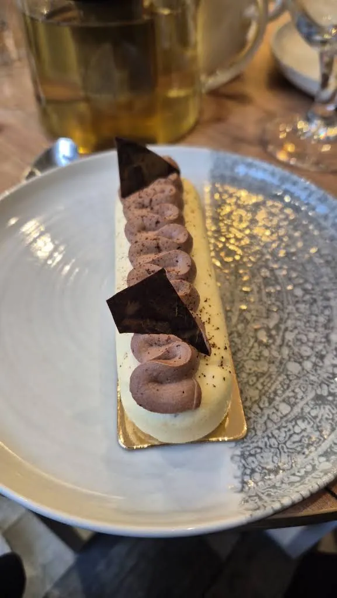

SELUNE, SARL, est immatriculée à Entraigues-sur-la-Sorgue, avec Julie Vallier pour gérante.
La maison
La tête dans les étoiles
Sélune, c’est le projet de Julie Vallier : une pâtisserie artisanale, un salon de thé et une petite restauration du midi, ouverts le 1er octobre 2026 au 37 rue du 19 Mars 1962, à Entraigues-sur-la-Sorgue.
01er octobre 2026 · ouverture
4,9/5★★★★★Note Google
0

maison
Une pâtisserie artisanale, un salon de thé et une petite restauration du midi, des créations faites maison et de saison, avec passion et gourmandise, dans un cadre chaleureux et accueillant.
Une journée chez Sélune
10 h
On ouvre
La vitrine se remplit : petits gâteaux du jour, l’Astro du mois, le café de Sarrians.
12 h
Le midi
Petite restauration et plat du jour, sur place ou à emporter.
16 h
Le goûter
Une part de cake, un cookie, un chocolat chaud — la formule goûter marche aussi pour les adultes.
18 h
À demain
Le jeudi, on ferme à 18 h. Les grands formats se commandent au 06 30 16 89 40.
De l’idée à l’ouverture
Sélune, pas à pas
« Ça y est, je peux enfin vous l’annoncer… Sélune ouvrira bientôt ses portes à Entraigues-sur-la-Sorgue ! »
Tasseaux de bois, plantes, tableaux : une ambiance cosy, chaleureuse et moderne prend sa place.
Le choix du local : le café de la Torréfaction Maison Bres, à Sarrians.
Mise en place : noisettes torréfiées, caramel, une pointe de fleur de sel.
Jeudi, à midi : « Nous avons hâte de vous accueillir pour partager avec vous nos douceurs maison ! »
Venez la goûter
37 rue du 19 Mars 1962 84320 Entraigues-sur-la-Sorgue